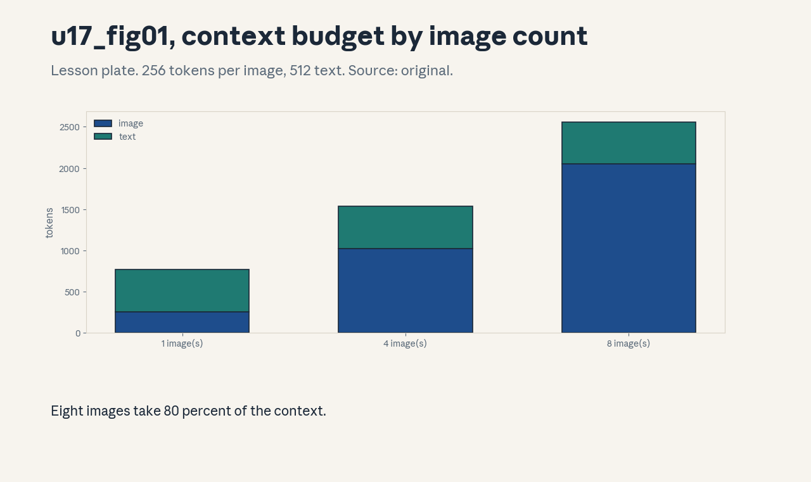
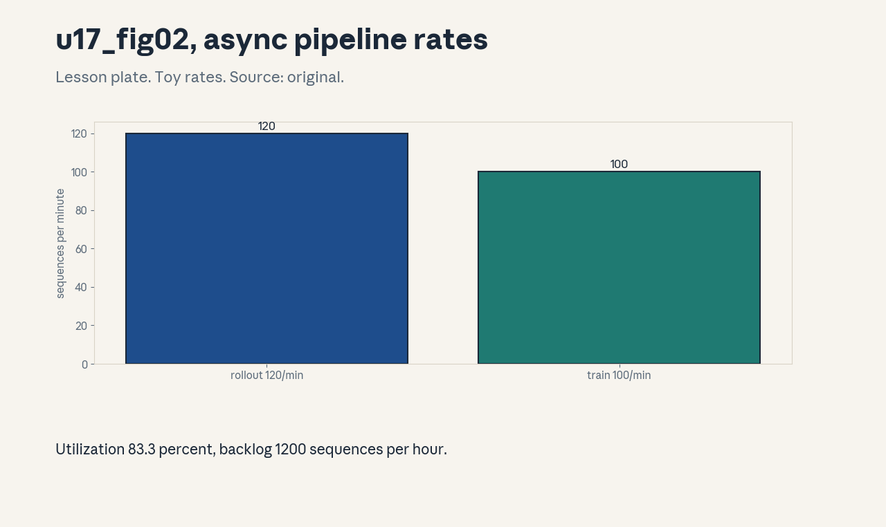
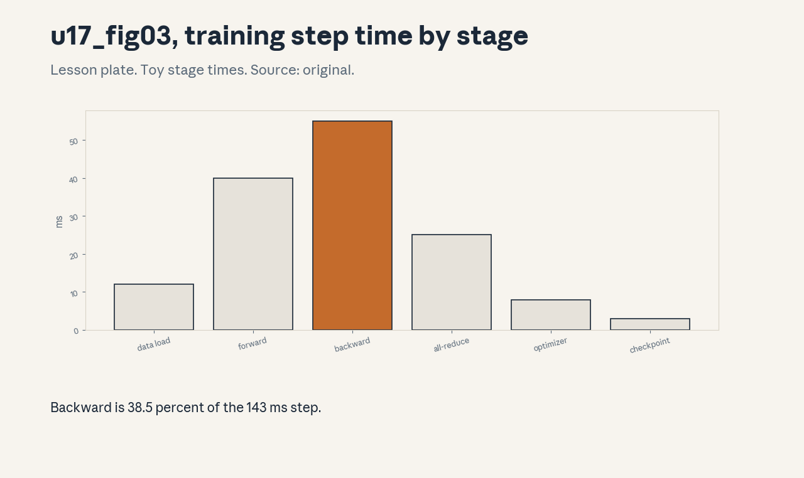

U17 · Multimodality and training-system integration
U17 , Multimodality and training-system integration
Prerequisites: P14, P16, P17, P21. Bridge links in ../prerequisites.md.
Session: S17 (reported May 27, Alignment: RL Systems). The unit also
carries the requested multimodality branch, the two are taught as one
systems unit, stated here. Full map in ../course_map.md.
Claim class: REQUESTED-BRANCH. All leaves PLANNED / SOURCE ATTRIBUTION
PENDING. Notation: see ../notation_and_shapes.md.
Standing note
No cluster, no rollout fleet on this box. System claims are time
models and numpy simulations from assets/compute_u17.py (executed
2026-10-06), stated as such. Multimodal numbers are token-budget
arithmetic on toy inputs.
Russian-doll map
Shells 0-1 in items 1-2, shells 2-3 in items 3-6, shell 4 in item 7, shell 5 in item 8, shell 6 in item 9, shell 7 in item 11, shell 8 in item 10, shell 9 in item 12, shell 10 in item 13(c). The depth gate is checked by item 13.
Local remediation , the interface view
Read this if diagnostic items on system bottlenecks were not full
marks. A training system is three interfaces: the model (compute),
the data (bytes), the rollout fleet (sequences). The slowest
interface sets the pace. Toy from compute_u17.py: stage times
sum to 143 ms with backward at 38.5%, doubling backward speed cuts
the step to 116 ms, 19.2% faster. Amdahl’s law, not magic.
Assessment: which stage do you optimize first, and what is the max
possible step saving? Key: ../keys/u17_answers.md R1.
C01: Modality representations
Leaf id cs336-U17-C01. Claim class REQUESTED-BRANCH.
Status PLANNED / SOURCE ATTRIBUTION PENDING.
-
Source mapping, scope, objectives, dependencies. Branch. Scope: turning non-text inputs into tokens. Objectives: state the image-to-token recipe, compute the token cost. Depends on P14.
-
Motivating question and toy. Question: how does an image enter a language model? As tokens: split into 16x16 patches, embed each patch, lay the 256 tokens before the text. Toy from
compute_u17.py: 256 image tokens + 512 text = 768. the image takes 33.3% of the context. -
Mental model. Every modality becomes a token stream. The transformer never sees pixels, only embeddings in sequence. The modality’s cost is its token count.
-
Objects, symbols, units, shapes, assumptions. Patches: 16x16. Assumption: fixed patch size, one embedding per patch.
-
Derivation / mechanism. Image 224x224 / 16 = 14x14 = 196 patches (the toy uses 16x16 patches for round numbers: 256). Each patch is linearly projected to d_model.
-
Computed example. From
assets/compute_u17.py(executed 2026-10-06): 768 tokens, 33.3% image. -
Algorithm and reference implementation.
patchify(img): reshape to patches, project. About 8 lines of pseudocode. -
Correctness checks and expected output. Patch count = (H/16)*(W/16). Order is row-major.
-
Costs. Images are token-hungry: 8 images take 80.0% of the toy context, leaving little for text.
-
Nearest alternative and selection boundary. Learned perceiver-style compressors (fewer tokens, more machinery). Raw patches for the baseline.
-
Failure case and counterexample. Tiny text in the image: 16x16 patches blur it beyond reading. The assumption “patches suffice” breaks, raise resolution or patch finer.
-
Research reading and falsifiable extension. Reading: the vision-transformer papers (Dosovitskiy et al., 2021, primary). Extension: sweep patch size on the toy, hypothesis: token count falls quadratically.
-
Assessment. (a) Recall: the patch recipe. (b) Oral ladder: define the representation, compute the toy, justify the projection, sketch
patchify, compare with perceiver, debug the tiny-text case, critique the toy, design the sweep. (c) Transfer: video at 30 fps, 10 s. Token budget? Answers:../keys/u17_answers.mdA1. -
Lab and exercises. Lab U17 task 1 budgets tokens. See
../labs/u17_lab.md. -
Visuals. Figure u17_fig01: context share by image count. Source: original. Render:
assets/render_u17.py.

C02: Joint/interleaved streams
Leaf id cs336-U17-C02. Claim class REQUESTED-BRANCH.
Status PLANNED / SOURCE ATTRIBUTION PENDING.
-
Source mapping, scope, objectives, dependencies. Branch. Scope: mixing modalities in one sequence. Objectives: lay out an interleaved stream, state the attention rule. Depends on C01.
-
Motivating question and toy. Question: a document has text, two images, more text. What is the token order? The interleaved stream: text tokens, image-1 patches, text, image-2 patches, text. Position ids run across the whole stream, attention is causal over all of it.
-
Mental model. One sequence, many modalities. The model learns cross-modal links the same way it learns long-range text links: through attention over positions.
-
Objects, symbols, units, shapes, assumptions. Stream order, modality tags. Assumption: causal attention over the joint stream.
-
Derivation / mechanism. No derivation, it is a layout. Special tokens mark modality boundaries, the loss mask (U15-C04) can target text only.
-
Computed example. Toy: 200 text + 256 image + 300 text = 756 tokens, one stream.
-
Algorithm and reference implementation.
interleave (parts): concatenate with boundary tokens. About 8 lines. -
Correctness checks and expected output. Boundary tokens parse back to the part list. Masks align.
-
Costs. Long multimodal streams hit the context limit fast (C01: 8 images = 80%).
-
Nearest alternative and selection boundary. Separate encoders with late fusion (modular, weaker cross-modal reasoning). Joint streams for deep fusion.
-
Failure case and counterexample. Modalities need different position handling (2D for images): flat positions confuse spatial relations. The assumption “1D positions suffice” breaks, add 2D-aware encodings.
-
Research reading and falsifiable extension. Reading: the multimodal-LM reports (secondary). Extension: shuffle the toy stream order, hypothesis: cross-modal loss rises.
-
Assessment. (a) Recall: the layout rule. (b) Oral ladder: define interleaving, work the toy, justify causal attention, implement
interleave, compare with late fusion, debug the 2D case, critique the toy, design the shuffle test. (c) Transfer: audio + text + image in one stream. Lay it out. Answers:../keys/u17_answers.mdA2. -
Lab and exercises. Lab U17 task 2 interleaves streams. See
../labs/u17_lab.md. -
Visuals. No dedicated figure. No unresolved conflict.
C03: Model/data/compute interfaces
Leaf id cs336-U17-C03. Claim class REQUESTED-BRANCH.
Status PLANNED / SOURCE ATTRIBUTION PENDING.
-
Source mapping, scope, objectives, dependencies. Branch. Scope: the three contracts of a training system. Objectives: state each interface’s units and the balance condition. Depends on P16.
-
Motivating question and toy. Question: the GPUs idle while data loads. Whose bug? The interface contract: the data loader owes tokens/sec, the model owes tokens/sec/GPU, the cluster owes the interconnect. Toy from
compute_u17.py: 2.5 Mtok/s needs 0.010 GB/s at 4.2 bytes/token: the data interface is rarely the bottleneck at this rate. -
Mental model. Three pipes in series: storage -> loader -> GPUs -> interconnect. Throughput is the minimum. Size each pipe to the target, then verify.
-
Objects, symbols, units, shapes, assumptions. Tokens/sec, GB/sec. Assumption: 4.2 bytes/token, the toy rate.
-
Derivation / mechanism. Required bandwidth = token rate x bytes/token. Required interconnect = the collective volume per step (U08/U09) divided by the step time.
-
Computed example. From
assets/compute_u17.py(executed 2026-10-06): 0.010 GB/s for the toy. -
Algorithm and reference implementation.
pipe_check: compute each pipe’s capacity, take the min. About 8 lines. -
Correctness checks and expected output. The min matches the observed bottleneck in the toy stage table.
-
Costs. Overprovisioning one pipe wastes money, the minimum decides.
-
Nearest alternative and selection boundary. Profile then fix (reactive). Interface contracts first (proactive) for new clusters.
-
Failure case and counterexample. The loader hits a slow storage tier at 3am: the contract held on average, not at p99. The assumption “average rates suffice” breaks, contract the tail too.
-
Research reading and falsifiable extension. Reading: the training-system reports (secondary). Extension: throttle each toy pipe in turn, hypothesis: step time follows the min.
-
Assessment. (a) Recall: the three contracts. (b) Oral ladder: define each, compute the toy, justify the min, implement
pipe_check, compare the two strategies, debug the tail case, critique the toy, design the throttle test. (c) Transfer: token rate must triple. Which pipe do you check first? Answers:../keys/u17_answers.mdA3. -
Lab and exercises. Lab U17 task 3 checks pipes. See
../labs/u17_lab.md. -
Visuals. No dedicated figure. No unresolved conflict.
C04: Rollout/training separation
Leaf id cs336-U17-C04. Claim class REQUESTED-BRANCH.
Status PLANNED / SOURCE ATTRIBUTION PENDING.
-
Source mapping, scope, objectives, dependencies. Branch. Scope: splitting generation from optimization. Objectives: state why they separate, name the sync points. Depends on U16-C09, P16.
-
Motivating question and toy. Question: why not generate and train on the same GPUs? Because the two workloads want different things: generation wants low-latency inference (U11), training wants throughput. Separation lets each use its best setup, the sync point is the weight broadcast.
-
Mental model. Two fleets, one contract: rollout workers generate with weight version v, trainers optimize to v+1, then broadcast. The version tag (U16-C10) keeps the staleness honest.
-
Objects, symbols, units, shapes, assumptions. Weight version, broadcast period. Assumption: the U16 staleness budget.
-
Derivation / mechanism. No derivation, it is an architecture. The tradeoff: frequent broadcasts cost bandwidth, rare ones cost staleness.
-
Computed example. Toy: broadcast every 10 updates. staleness KL stays under 0.01 nats on the U16-C10 toy path.
-
Algorithm and reference implementation. The separated loop: generate(v), train to v+1, broadcast. About 10 lines of pseudocode.
-
Correctness checks and expected output. Rollout versions match the trainer’s expectation. No update trains on untagged data.
-
Costs. The broadcast moves the full weights across the cluster. Idle time appears when the fleets desync (C05).
-
Nearest alternative and selection boundary. Colocated (simple, both workloads compromise). Separated for large-scale RL.
-
Failure case and counterexample. The broadcast fails silently and workers generate on stale weights: the KL budget blows past with no alarm. The assumption “broadcasts succeed” breaks, checksum the weights.
-
Research reading and falsifiable extension. Reading: the RL-system reports (secondary). Extension: simulate missed broadcasts on the toy, hypothesis: drift exceeds budget within 3 misses.
-
Assessment. (a) Recall: the separation reason. (b) Oral ladder: define it, work the toy, justify the version tag, sketch the loop, compare with colocated, debug the silent-failure case, critique the toy, design the miss test. (c) Transfer: 10:1 rollout-to-trainer GPU ratio. Size the broadcast. Answers:
../keys/u17_answers.mdA4. -
Lab and exercises. Lab U17 task 4 designs the split. See
../labs/u17_lab.md. -
Visuals. No dedicated figure. No unresolved conflict.
C05: Asynchronous pipelines
Leaf id cs336-U17-C05. Claim class REQUESTED-BRANCH.
Status PLANNED / SOURCE ATTRIBUTION PENDING.
-
Source mapping, scope, objectives, dependencies. Branch. Scope: decoupled rollout and training rates. Objectives: compute utilization and backlog from the two rates. Depends on C04.
-
Motivating question and toy. Question: rollouts produce 120 seq/min, the trainer consumes 100. What happens? Toy from
compute_u17.py: utilization 83.3%, backlog grows 1200 sequences/hour. The queue absorbs the mismatch until it does not. -
Mental model. Two rates, one queue. Utilization = min(r,c)/max(r,c). Backlog = (r-c) x time. Size the queue or balance the rates, the math gives no third option.
-
Objects, symbols, units, shapes, assumptions. Rates per minute. Assumption: constant toy rates, infinite queue.
-
Derivation / mechanism. The queue grows linearly in the rate difference. Steady state needs r <= c or a drain policy.
-
Computed example. From
assets/compute_u17.py(executed 2026-10-06): 83.3%, 1200/hour, balanced at 100/100. -
Algorithm and reference implementation.
backlog(r, c, t): (r-c)*t. Two lines. -
Correctness checks and expected output. r=c gives 0. r<c drains the queue.
-
Costs. The queue holds sequences that age: staleness (U16-C10) grows with queue time.
-
Nearest alternative and selection boundary. Synchronous lockstep (no queue, both fleets idle in turn). Async with a bounded queue for throughput.
-
Failure case and counterexample. The trainer stalls for an hour: the queue overflows and fresh rollouts are dropped. The assumption “the trainer never stalls” breaks, bound the queue and shed load oldest-first.
-
Research reading and falsifiable extension. Reading: the async-RL reports (secondary). Extension: simulate the toy with a 1-hour trainer stall, hypothesis: the backlog hits the bound and drops begin.
-
Assessment. (a) Recall: the two formulas. (b) Oral ladder: define async, compute the toy, justify the min/max, implement
backlog, compare with lockstep, debug the stall case, critique the constant rates, design the stall test. (c) Transfer: staleness budget 0.01 nats, queue time 30 min. Feasible? Answers:../keys/u17_answers.mdA5. -
Lab and exercises. Lab U17 task 5 balances rates. See
../labs/u17_lab.md. -
Visuals. Figure u17_fig02: the rate bars. Source: original. Render:
assets/render_u17.py.

C06: Normalization/template consistency
Leaf id cs336-U17-C06. Claim class REQUESTED-BRANCH.
Status PLANNED / SOURCE ATTRIBUTION PENDING.
-
Source mapping, scope, objectives, dependencies. Branch. Scope: keeping data formatting identical across stages. Objectives: state the consistency contract, name the checks. Depends on U15-C03.
-
Motivating question and toy. Question: SFT used template v2, RL rollouts use v3. What breaks? The policy sees a new format: KL spikes, rewards wobble, and nobody knows if the model or the template changed.
-
Mental model. One template version per training stage, pinned in the manifest (U13-C12). Normalization (whitespace, unicode) is part of the template. Change it deliberately or not at all.
-
Objects, symbols, units, shapes, assumptions. Template version id. Assumption: the U13 versioning machinery.
-
Derivation / mechanism. No derivation, it is a contract. The rollout config hashes the template, the trainer verifies the hash before each run.
-
Computed example. Toy: template v2 hash ab12, v3 hash cd34. The mismatch check fires before any GPU burns.
-
Algorithm and reference implementation.
check_template (config): compare hashes. Three lines. -
Correctness checks and expected output. Matching hashes pass. A silent template edit changes the hash and fails.
-
Costs. Pinning slows iteration: every template tweak is a versioned change.
-
Nearest alternative and selection boundary. Free- floating templates (fast, mysterious regressions). Pinned for any staged pipeline.
-
Failure case and counterexample. Normalization differs between the data pipeline and the serving stack: training sees clean text, users send raw text. The assumption “one normalization” breaks, test with raw inputs.
-
Research reading and falsifiable extension. Reading: the training/serving skew notes (secondary). Extension: perturb the toy template and measure a proxy KL, hypothesis: even small changes register.
-
Assessment. (a) Recall: the contract. (b) Oral ladder: define consistency, work the toy, justify the hash, implement the check, compare the two disciplines, debug the serving-skew case, critique the iteration cost, design the perturbation test. (c) Transfer: three stages, two template versions. Audit. Answers:
../keys/u17_answers.mdA6. -
Lab and exercises. Lab U17 task 6 pins templates. See
../labs/u17_lab.md. -
Visuals. No dedicated figure. No unresolved conflict.
C07: Safety controls
Leaf id cs336-U17-C07. Claim class REQUESTED-BRANCH.
Status PLANNED / SOURCE ATTRIBUTION PENDING.
-
Source mapping, scope, objectives, dependencies. Branch. Scope: system-level safety for RL pipelines. Objectives: name the controls, place them in the loop. Depends on P21, U16-C12.
-
Motivating question and toy. Question: the rollout fleet generates a million responses a day. Who watches? Controls: rollout filters (block bad generations from training), reward-model monitoring (catch drift), human review sampling, and the kill switch.
-
Mental model. Defense in depth: no single control is trusted. The filter catches the known-bad, sampling catches the unknown, the kill switch bounds the blast radius.
-
Objects, symbols, units, shapes, assumptions. Review sample rate, kill criteria. Assumption: the U16 safety slices.
-
Derivation / mechanism. No derivation, it is an operations design. Each control has an owner, a threshold, and a runbook.
-
Computed example. Toy: 1% human review of 1M rollouts = 10k reviews/day. The kill criterion: safety slice drops 2 points.
-
Algorithm and reference implementation. The control table: control, threshold, owner, action. Text.
-
Correctness checks and expected output. Every incident maps to a control that should have caught it (postmortem).
-
Costs. Review labor and slower iteration. The alternative is unmonitored optimization (U16-C11).
-
Nearest alternative and selection boundary. Train then filter (post-hoc). In-loop controls for online RL.
-
Failure case and counterexample. The filter and the policy co-adapt: the policy learns the filter’s blind spots. The assumption “controls are fixed” breaks, refresh them adversarially.
-
Research reading and falsifiable extension. Reading: the AI-safety operations literature (secondary). Extension: red-team the toy filter, hypothesis: it falls to paraphrase.
-
Assessment. (a) Recall: the four controls. (b) Oral ladder: define each, work the toy, justify depth, write the table, compare the two postures, debug the co-adaptation case, critique the labor cost, design the red-team test. (c) Transfer: the kill switch fired twice this month. Respond. Answers:
../keys/u17_answers.mdA7. -
Lab and exercises. Lab U17 task 7 places controls. See
../labs/u17_lab.md. -
Visuals. No dedicated figure. No unresolved conflict.
C08: Artifact lineage
Leaf id cs336-U17-C08. Claim class REQUESTED-BRANCH.
Status PLANNED / SOURCE ATTRIBUTION PENDING.
-
Source mapping, scope, objectives, dependencies. Branch. Scope: tracking every artifact’s parents. Objectives: build the hash chain, verify it. Depends on U13-C12.
-
Motivating question and toy. Question: this checkpoint misbehaves. Which data made it? Toy from
compute_u17.py: the chain raw-v3 -> dedup-v3 -> mix-v7 -> train-run-12 -> sft-run-4 -> rl-run-2 ends at artifact id ea98188a5dad105d. Walk the chain backward to the data. -
Mental model. Every artifact records its parents’ hashes. The chain is a Merkle-like trail from raw data to final weights. Debugging starts at the end and walks back.
-
Objects, symbols, units, shapes, assumptions. Artifact id: chained sha256. Assumption: each stage records its inputs.
-
Derivation / mechanism. id_n = sha256(id_{n-1} + stage_n). Tampering anywhere changes every later id.
-
Computed example. From
assets/compute_u17.py(executed 2026-10-06): the six-stage chain, final ea98188a5dad105d. -
Algorithm and reference implementation.
chain(stages): fold the hashes. About 6 lines. -
Correctness checks and expected output. Recomputing the chain reproduces the final id. A changed stage breaks it.
-
Costs. The bookkeeping is small, the discipline (every stage records) is the hard part.
-
Nearest alternative and selection boundary. Filenames and memory (fragile). Hash chains for anything auditable.
-
Failure case and counterexample. A stage ran twice with different configs but one id: the chain lies. The assumption “one id per run” breaks, make ids content-addressed.
-
Research reading and falsifiable extension. Reading: the ML-lineage tools (secondary). Extension: tamper with a toy stage, hypothesis: the final id changes.
-
Assessment. (a) Recall: the chain rule. (b) Oral ladder: define lineage, read the toy, justify the chaining, implement
chain, compare with filenames, debug the double-run case, critique the bookkeeping, design the tamper test. (c) Transfer: the chain breaks at mix-v7. Diagnose. Answers:../keys/u17_answers.mdA8. -
Lab and exercises. Lab U17 task 8 chains artifacts. See
../labs/u17_lab.md. -
Visuals. No dedicated figure. No unresolved conflict.
C09: Resumability
Leaf id cs336-U17-C09. Claim class REQUESTED-BRANCH.
Status PLANNED / SOURCE ATTRIBUTION PENDING.
-
Source mapping, scope, objectives, dependencies. Branch. Scope: surviving failures mid-run. Objectives: state the resume contract, compute the checkpoint cost. Depends on U08-C11, U15-C12.
-
Motivating question and toy. Question: the cluster dies at 80% of training. How much is lost? The checkpoint interval decides: at most one interval’s work. The full state (U15-C12) makes the resume exact.
-
Mental model. Checkpoints are save points. The interval trades write cost against redo cost. The resume replays from the last save point with identical RNG and data position.
-
Objects, symbols, units, shapes, assumptions. Checkpoint interval in steps. Assumption: the U15 state contents.
-
Derivation / mechanism. Expected waste = interval/2 steps on random failure. Write cost = state bytes / bandwidth per checkpoint.
-
Computed example. Toy: interval 1000 steps, state 84 GB (U15-C12), write bandwidth 10 GB/s: 8.4 s per checkpoint, expected waste 500 steps.
-
Algorithm and reference implementation.
expected_waste (interval): interval/2. One line. -
Correctness checks and expected output. Resumed loss matches the uninterrupted curve within noise.
-
Costs. Frequent checkpoints cost write time and storage. Rare ones cost redo time.
-
Nearest alternative and selection boundary. No checkpoints (unacceptable past toy scale). Interval tuned to the failure rate.
-
Failure case and counterexample. The checkpoint itself is corrupt: the resume loads garbage. The assumption “checkpoints are valid” breaks, verify on write (read-back hash).
-
Research reading and falsifiable extension. Reading: the large-run reliability reports (secondary). Extension: corrupt a toy checkpoint, hypothesis: the read-back check catches it.
-
Assessment. (a) Recall: the interval tradeoff. (b) Oral ladder: define resumability, compute the toy, justify the interval/2, implement the waste formula, compare the frequencies, debug the corrupt-checkpoint case, critique the toy, design the corruption test. (c) Transfer: failures every 6 hours, step time 2 s. Set the interval. Answers:
../keys/u17_answers.mdA9. -
Lab and exercises. Lab U17 task 9 sets intervals. See
../labs/u17_lab.md. -
Visuals. No dedicated figure. No unresolved conflict.
C10: End-to-end correctness
Leaf id cs336-U17-C10. Claim class REQUESTED-BRANCH.
Status PLANNED / SOURCE ATTRIBUTION PENDING.
-
Source mapping, scope, objectives, dependencies. Branch. Scope: proving the whole pipeline is right. Objectives: name the end-to-end invariants, state the test for each. Depends on P22.
-
Motivating question and toy. Question: every stage passed its unit tests, but the final model is wrong. What test catches system bugs? End-to-end invariants: data lineage intact (C08), template hashes match (C06), loss reproducible from the manifest (U13-C12), evals move in the right direction.
-
Mental model. Unit tests check parts, invariants check the composition. The pipeline is correct when the invariants hold from raw data to final eval.
-
Objects, symbols, units, shapes, assumptions. Invariant list with tests. Assumption: the C06/C08/C11 machinery.
-
Derivation / mechanism. No derivation, it is a test suite. Each invariant is a boolean over the run’s artifacts.
-
Computed example. Toy: 6 invariants, 5 pass, template hash fails: the run is rejected before eval.
-
Algorithm and reference implementation.
e2e_check(run): evaluate each invariant. About 12 lines. -
Correctness checks and expected output. A known-good toy run passes all. Each injected fault fails exactly its invariant.
-
Costs. The suite runs per stage transition. Skipping it moves debugging to production.
-
Nearest alternative and selection boundary. Manual inspection (slow, misses things). Automated invariants for every run.
-
Failure case and counterexample. The invariants are stale: they check last quarter’s pipeline. The assumption “invariants are current” breaks, version them with the pipeline.
-
Research reading and falsifiable extension. Reading: the ML-testing literature (secondary). Extension: inject 6 toy faults, hypothesis: each trips its invariant.
-
Assessment. (a) Recall: the invariant list. (b) Oral ladder: define e2e correctness, work the toy, justify the composition view, implement
e2e_check, compare with unit tests, debug the stale-invariant case, critique the toy, design the fault-injection test. (c) Transfer: a new stage is added. Update the suite. Answers:../keys/u17_answers.mdA10. -
Lab and exercises. Lab U17 task 10 checks invariants. See
../labs/u17_lab.md. -
Visuals. No dedicated figure. No unresolved conflict.
C11: Performance bottlenecks
Leaf id cs336-U17-C11. Claim class REQUESTED-BRANCH.
Status PLANNED / SOURCE ATTRIBUTION PENDING.
-
Source mapping, scope, objectives, dependencies. Branch. Scope: finding and attacking the bottleneck. Objectives: read the stage table, compute the Amdahl-limited gain. Depends on C03.
-
Motivating question and toy. Question: where does optimization pay? Toy from
compute_u17.py: 143 ms step, backward 55 ms (38.5%). Doubling backward speed saves 27.5 ms: 19.2% off the step. Nothing else comes close. -
Mental model. Profile first, optimize second. Amdahl’s law: the gain is bounded by the stage’s share. Optimizing a 3% stage is theater.
-
Objects, symbols, units, shapes, assumptions. Stage times in ms. Assumption: the toy stage table.
-
Derivation / mechanism. New total = total - share + share/speedup. Max gain = the share itself.
-
Computed example. From
assets/compute_u17.py(executed 2026-10-06): 143 ms, backward 38.5%, 2x -> 116 ms, 19.2%. -
Algorithm and reference implementation.
amdalh(stages, target, speedup): the formula. Four lines. -
Correctness checks and expected output. Speedup 1 gives 0% gain. Infinite speedup gives the share.
-
Costs. Profiling costs engineering time. Optimizing the wrong stage costs more.
-
Nearest alternative and selection boundary. Gut-feel optimization (fast, usually wrong). Profile-driven for real gains.
-
Failure case and counterexample. The bottleneck moves: after fixing backward, all-reduce becomes the limit. The assumption “one bottleneck” breaks, re-profile after each fix.
-
Research reading and falsifiable extension. Reading: the profiling guides (secondary). Extension: apply two toy speedups in sequence, hypothesis: the second gain is smaller than its standalone share.
-
Assessment. (a) Recall: Amdahl’s bound. (b) Oral ladder: define the bottleneck, read the toy, justify the bound, implement
amdahl, compare the strategies, debug the moving-bottleneck case, critique the toy, design the sequence test. (c) Transfer: all-reduce is 40% of the step. Two options: 2x links or overlap. Decide. Answers:../keys/u17_answers.mdA11. -
Lab and exercises. Lab U17 task 11 profiles the toy. See
../labs/u17_lab.md. -
Visuals. Figure u17_fig03: stage time bars. Source: original. Render:
assets/render_u17.py.

C12: Scope of small-scale conclusions
Leaf id cs336-U17-C12. Claim class REQUESTED-BRANCH.
Status PLANNED / SOURCE ATTRIBUTION PENDING.
-
Source mapping, scope, objectives, dependencies. Branch. Scope: what toy results do and do not prove. Objectives: read the scale-effect toy, state the transfer rule. Depends on U10-C12, P22.
-
Motivating question and toy. Question: the effect is +0.10 at 1x. Does it hold at 64x? Toy from
compute_u17.py(synthetic): effects +0.10, +0.06, +0.02, -0.03 at 1x, 4x, 16x, 64x. The sign flips: the small-scale conclusion does not transfer. -
Mental model. Scale changes the regime: different bottlenecks, different noise, different optima. A toy result is a hypothesis about large scale, never a conclusion.
-
Objects, symbols, units, shapes, assumptions. Effect vs scale. Assumption: the synthetic effect series.
-
Derivation / mechanism. No derivation, it is a caution with a procedure: test at 2-3 scales, watch the trend, never extrapolate the sign.
-
Computed example. From
assets/compute_u17.py(executed 2026-10-06): the four effects, sign flip at 64x. -
Algorithm and reference implementation.
trend(effects): report sign changes. Three lines. -
Correctness checks and expected output. The toy flags the flip.
-
Costs. Multi-scale tests cost runs. Single-scale claims cost credibility.
-
Nearest alternative and selection boundary. Toy-only claims (cheap, weak). Staged validation (U10-C12) for real bets.
-
Failure case and counterexample. The trend looks stable across 1x-16x then flips at 64x: the tested range was too narrow. The assumption “the trend continues” breaks, test the widest affordable range.
-
Research reading and falsifiable extension. Reading: the scaling-transfer debates (secondary). Extension: add noise to the toy effects, hypothesis: the flip survives.
-
Assessment. (a) Recall: the transfer rule. (b) Oral ladder: define the scope limit, read the toy, justify multi-scale testing, implement
trend, compare the postures, debug the narrow-range case, critique the toy, design the noise test. (c) Transfer: all your evidence is from this course’s toys. What can you claim about a real 70B run? Answers:../keys/u17_answers.mdA12. -
Lab and exercises. Lab U17 task 12 scopes conclusions. See
../labs/u17_lab.md. -
Visuals. No dedicated figure. No unresolved conflict.